Como nos conhecemos: Estamos conectados desde pequeno, desde o fundamental, e é exatamente isso que faz eu te amar tanto, pois, sempre esteve óbvio que seria você.
Primeiro encontro: O primeiro encontro oficial foi no Habib's, porém, eu sou muito mais os dias que a gente se via na esquina de cima da academia.
Momentos especiais: Nossa viagem pra Maringá, porém, acada segundo com você é extremamente especial.
Galeria de Fotos
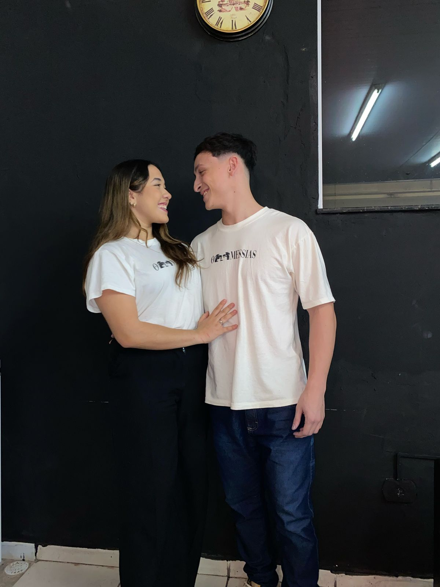
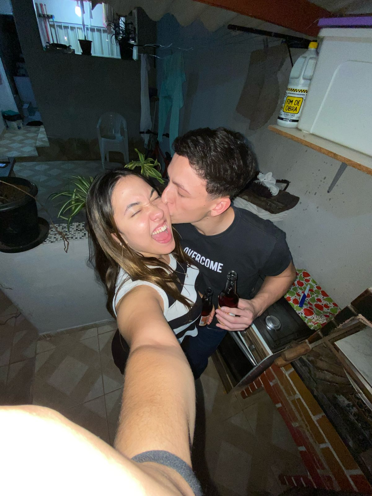
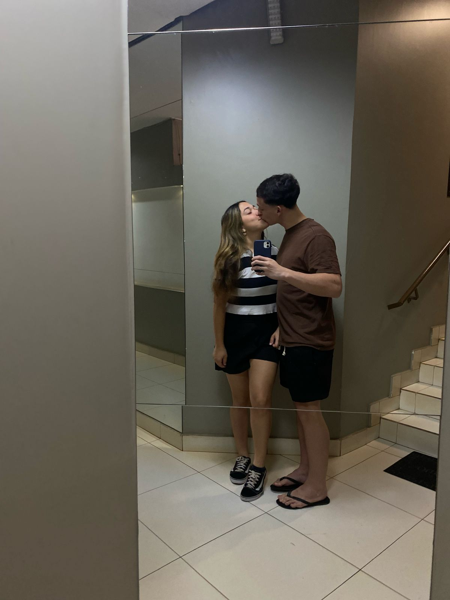
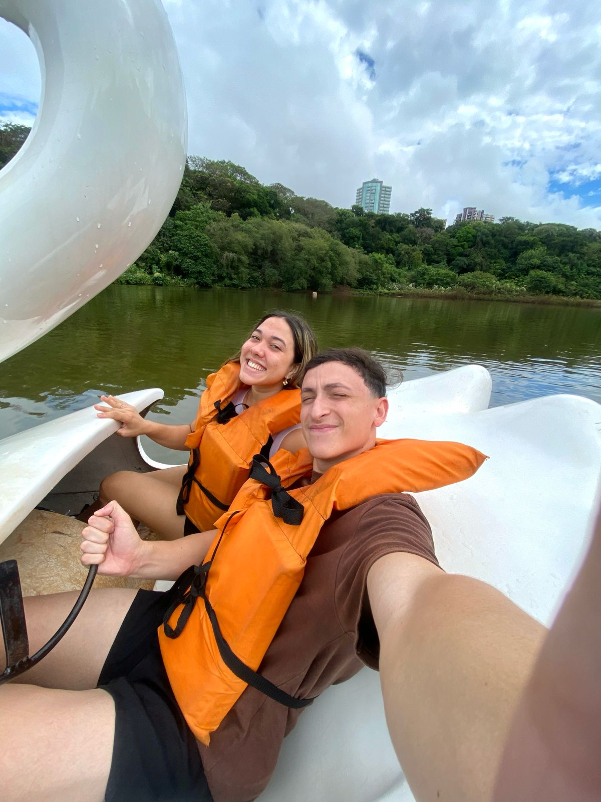
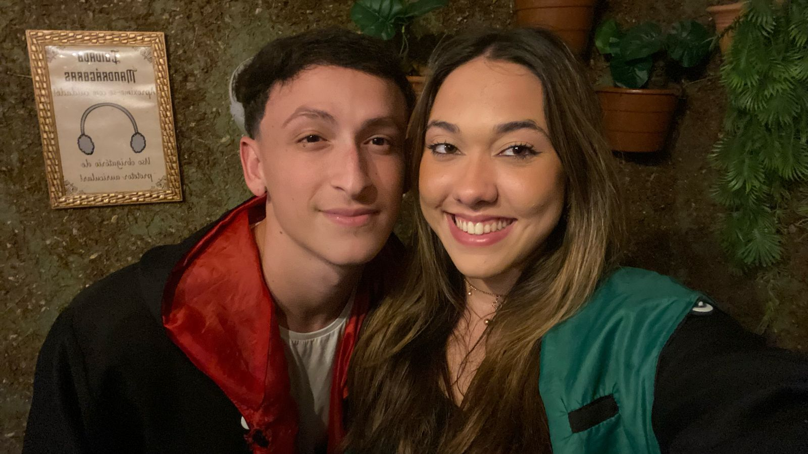
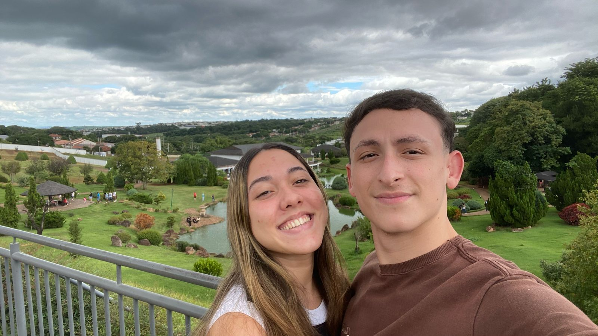
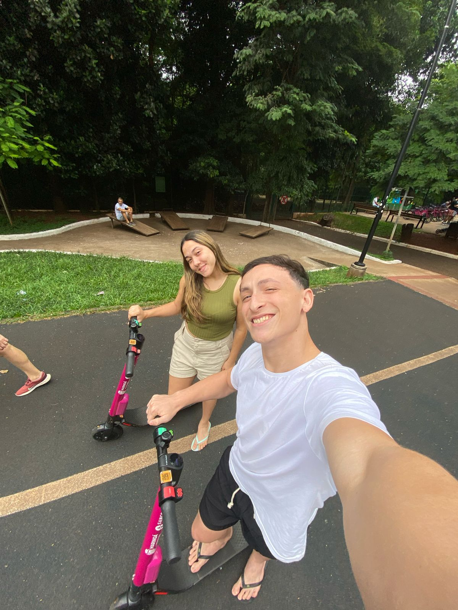
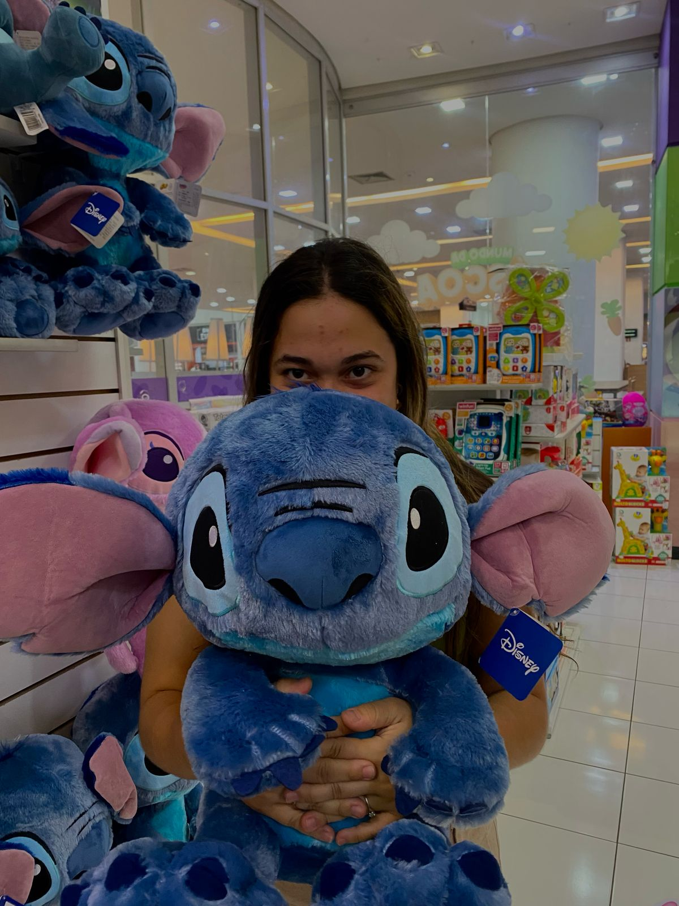
Nossa Música 🎶
Contagem Regressiva Para 4 Anos 📅
Carregando...
Nossos Planos 🌟
🌍 Viajar para Itália juntos
🏫 Casarmos em um campo
🏡 Mudarmos para Maringá
🐈 Adotarmos nosso gato laranja
20/05/2025 - Dia 07
BOOOOOOOOOOOOOOOOOOOOOM DIA MINHA PRINCESA!
Acordei pensando em você, já esperando sua notificação hoje, e serio, é tao bom acordar e ver suas mensagens..
Antes de tudo, quero que se lembre que eu te amo mais que tudo, você e a mulher da minha vida, a dona do meu coração todo!
Ontem conversamos sobre casamento, e serio, tudo que eu mais quero é isso. Tudo que eu mais penso é isso.
Quero casar com você o quanto antes, quero viver com você o quanto antes, quero construir uma vida com você o quanto antes!!
Mal posso esperar para te ver chegando ao meu encontro, te mandar flores antes de subir pro altar, te beijar la em cima, sair de la e viver nossa vida!!!!!
Inclusive, nesse exato momento, estou com o Excel aberto criando uma planilha de controle financeiro, separando o que vou gastar e o que vai ser minha prioridade (nos) por mês. Assim, o quanto antes, estaremos juntos para sempreeeee!
Eu quero tanto viver isso, tanto tanto tanto!
Quero tanto realizar os planos que criamos!
Eu te amo mais que tudo nesse mundo, você é dona do meu coração todo!
Eu amo quando estou com você, você me faz tao bem!
Eu amo planejar nosso futuro juntos, amo ver cada detalhe e imaginar tudo com você.
Mas eu quero muito mais realizar tudo isso com você!
Como eu disse, vamos fazer dar certo dessa vez, cortar gastos desnecessários, entender nossa prioridade/meta. Nossos planos não são iguais dos nossos amigos, como Monique e Samuel por ex, então não da pra gente viver da mesma forma que eles. Sendo assim, vamos abrir mao de muita coisa, mas pensa bem, vamos ter as coisas da nossa casa, vamos ter nossa casa, nossa vida, o quanto antes!
Eu te amo mais que tudo e quero fazer isso dar certo o quanto antes!
Não tem um dia que eu não pense nisso
Entao vamos, vamos fazer isso virar realidade logo aaaaaaaaaa
Você a dona do meu coração minha princesa!
Quero que saiba que eu tenho muito orgulho de você, da sua profissão, do seu esforço, da sua luta, de tudo que você faz meu amor, saiba que eu vejo cada esforço, e sinto MUITO orgulho de você!
Você é a melhor garota do mundo, eu te amo demais!
Quero fazer devocional com você sexta-feira dps que chegarmos do cinema, sem falta, ok?
Quero viver tudo o que falei, quero liderar com você, quero orar com você, quero chorar com você.. Mas quero que tenhamos experiencias sozinhos também, por isso, espero que você esteja fazendo seu devocional certinho, pq sim, vai dar tudo certo!
E obviamente, quero muuuuito chegar e ficar agarrado com você, grudado, sem largar, dando muito beijo, carinho, te apreciar enquanto vc me olha com o olho fechadinho, com um sorrisinho bobo, que meu Deus 🦋🦋🦋🦋🦋🦋🦋🦋🦋🦋🦋🦋🦋🦋
Promete que vai me beijar muito, que eu prometo que vou te abraçar muuuuuuuuuito
você sempre será o meu motivo mais puro de acordar e lutar cada dia mais.
Todos os dias, eu chego aqui, e antes de tudo, antes de abrir gaveta, antes de ligar PC, antes de tudo, eu dou um beijo na mao e toco na nossa foto e falo "por nos, mais um dia".
Pq sim, você é o motivo de eu tentar todos os dias, você é quem me motiva todos os segundos!
Pode achar que é mentira, pode pensar que to blefando, mas não, eu realmente faço isso, todos os dias. Pensando em você todos os dias, pensando em nos!
Eu te amo!
ou melhor
EU TE AAAAMOOOOOOOOOOOOOOOOOOOOOOOOOOOOOOOOOOOOOOOOOOOOOOOOOOOOOOOOOOOOOOOOOOOOOOOOOOOOOOOOOOOOOOOOOOOOOOOOOOOOOOOOOOOOOOOOOOOOOO!
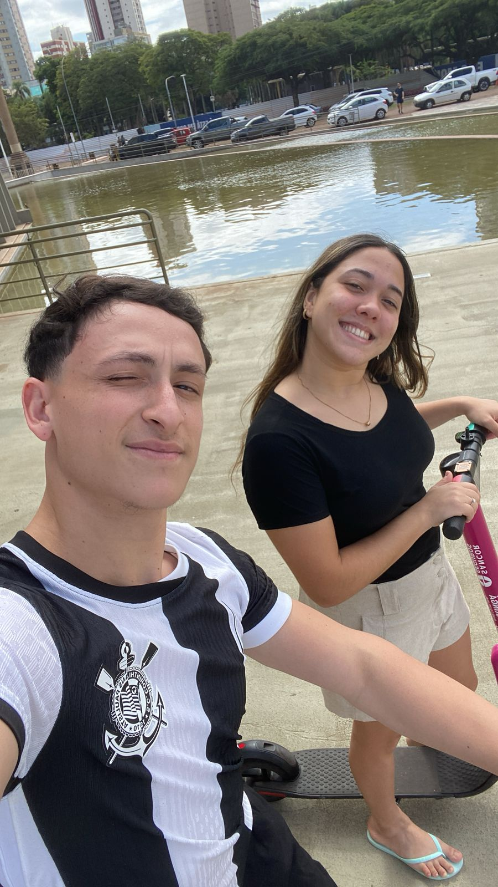
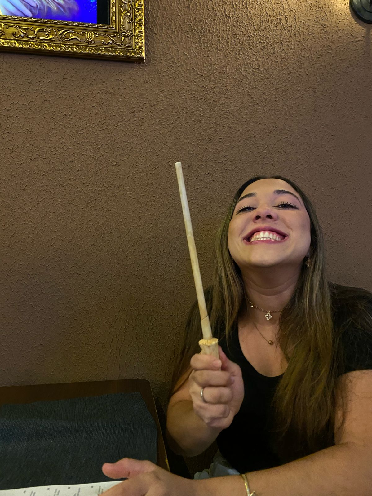
you will always be my princess.
voce sempre vai merecer o meu coração, entao, toma todos:
EU TE AMO MAIS QUE TUDO NESSE PLANETA MINHA DAMA!!!!!!!!
19/05/2025 - Dia 06
BOOOOOOOOOOM DIA MEU AMOR!
Como você está? Eu to muito ansioso pra que chegue sexta-feira para que a gente possa ficar colado a noite toda!!!
Cara, eu te amo tanto, nao sei nem como explicar tudo isso, mas como eu falei, eu vou te mostrar um pouquinho disso cada dia!
Voce é a mulher da minha vida, voce causa as melhores coisas da minha vida!
Ainda estou pensando em como foi sabado, processando cada olhar seu, cada beijo, cada abraço.. eu te amo tanto , minha futura esposa!
Voce me causa cada coisa que eu nem sei explicar, so fico bobo pensando em voce mesmo!🦋🦋🦋🦋🦋
Eu tenho muito a te falar ainda, eu sinto tanta coisa por voce, eu te amo tanto, é tao bom poder acordar com o seu bom dia, é sensacional!!!!!!
Em breve vamos nos dar todos esses bom dia pessoalmente, olhando olho no olho, enquanto isso nao acontece, eu continuo escrevendo pra voce e dizendo os boa noite no fim de semana..
ah, e enquanto isso também, eu continuo te amando cada dia mais!
diferente de tudo o que ja senti, voce é a surpresa que eu espero todo dia, mas meu coração agradece tanto. Voce é o meu sentimento de paz, amor, felicidade e tudo mais!
Nao sei explicar, cada segundo com voce é magico, cada momento com voce é uma aventura, cada dia com voce é um sonho!
Quero afirmar todos os dias pra voce e para o mundo que eu te amo, que quero voce na minha vida!
Obrigado por ser voce!
Sao poucas as pessoas que podem se encontrar tao "cedo", e graças a Deus eu te encontrei antes dos meus 18.
É uma chanche rara de viver, desvendar, de me entregar para voce cada dia, de me propor, de nos propor, uma nova perspectiva de ver o mundo ao seu lado, e serio, que sorte!
Tudo que eu precisava, eu encontrei em você!
Voce me completa, voce me faz ser alguem melhor, e eu te amo com todas as minhas forças!
Eu te escolho todos os dias, acordo pensando em voce, no teu sorriso, nos momentos que vivemos e vamos viver, e principalmente, sabado hehe..
Eu quero construir uma vida ao seu lado, construir as melhores lembranças e memorias!
Quarta-feira, eu te agradeci por tudo que vivemos e disse que fui a pessoa mais feliz do mundo..
Mas agora eu continuo te agradecendo por tudo o que ja vivemos, mas digo que ainda vamos viver muito, e vamos ser as pessoas mais felizes do mundo pra sempre!
Que sorte a minha, de encontrar voce em todos os lugares familiares e saber que estou seguro..
Serio, durante essa semana, eu passava pelas ruas, e lembrava de voce em cada esquina, cada meio de quarteirao..
Eu passava pelas lojas que ja entramos mil e uma vezes, e eu lembrava de voce..
Eu passava pela escola, e eu lembrava de voce cada vez..
Eu passava pela rua e lembrava de cada vez que eu passei pela rua com voce..
Eu ia pra academia e so conseguia lembrar de voce
Que sorte a minha te ter hoje
Quero te ter todos os dias!
Ja parou pra pensar o quanto Deus foi bom conosco? Serio, imagina como seria nunca nos encontrarmos.. Imagina tudo que nao viveriamos..
Eu fico louco pensando nisso, cara, imagina nunca ter te conhecido?
Mas ainda bem, serio, que sorte a minha, nascer na mesma epoca que voce.
De existir ao mesmo tempo que voce
De estar solteiro bem quando voce tbm estava.
Que sorte ter voce para lembrar que nao estou sozinho
Que sorte a minha ter te encontrado..
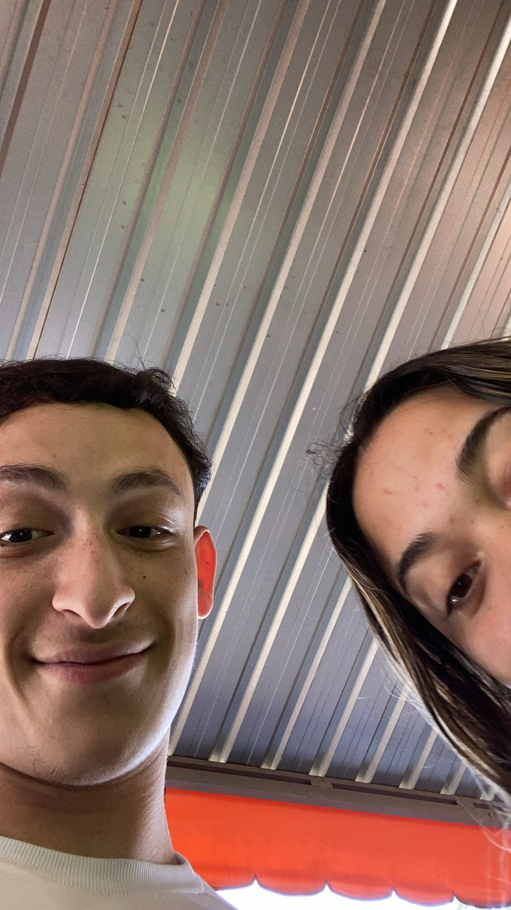
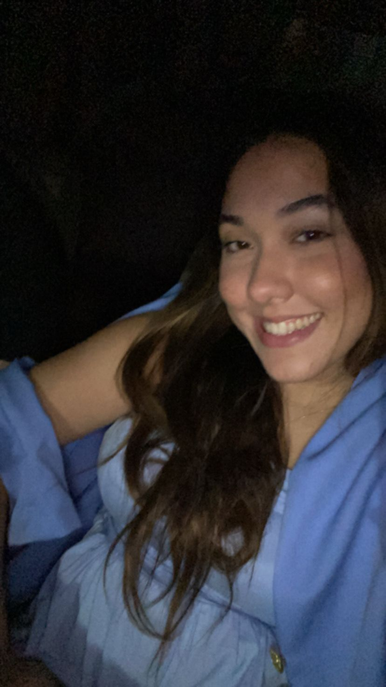
Provérbios 3:15 "Mais preciosa é ela do que os rubis, e tudo o que mais podes desejar não se pode comparar a ela"
Não consigo parar de pensar em você, você me trava e destrava todo, você me faz parar e ficar elétrico ao mesmo tempo
Caraca, eu quero tanto te abraçar, te beijar tanto, te olhar nos olhos e dizer que eu te amo, ver você me olhando com olharzinho de japonês e dizendo que me ama, EU TE AMO TANTOOOOOOOO
você é a mulher da minha vida, eu sou tao apaixonado em você, eu te amo tanto, cara, eu não paro de pensar em sábado também, em cada segundo que passamos, cada olhar, cada toque, cada abraço, misericórdia, fico bobo demais, sorrindo pro vento, pensando em você a todo momento..
Eu to com saudade, quero te abraçar, quero te beijar, quero dizer que você é minha pra sempre, quero dizer que te amo, quero ficar com você pro resto da vida!!!!
Mal posso esperar para gente casar, eu quero tanto isso, tanto tanto tanto, poder ficar com você pra sempre, na nossa casa, so nos dois..
MEU DEUS COMO EU TE AMOOOOOOOOO!!!!!
POR FAVOR, PROMETE FICAR COMIGO PRO RESTO DA VIDAAAAAAAAA!
cara, serio mesmo, não paro de pensar em você nem por um segundo, desde o inicio do dia, so olhando sua foto, pensando como foi tudo, pensando como foi cada olhar, cada beijo, mds eu to bobo..
Casa comigo pelo amor de Deus, você e a mulher da minha vida toda!
Você tava linda ontem no culto, tava sensacional mesmo, que baita mulher, e de aliança, fica mais linda ainda
Eu fico todo bobo quando você me faz carinho no pescoço/cabelo, perco toda postura, fico mole, meu Deus é tao bom!!!
Você é a MULHER DA MINHA VIDAAAAAAA!
18/05/2025 - Dia 05
Boa noite meu amor, agora sao exatamente 04:42 e eu me pego pensando em você.
A verdade é que e muito bom poder te chamar de "meu amor" novamente.
Eu sei que ta dormindo e quando acordar, ja vai ter lido o texto que te mandei no WhatsApp, vai ter visto que sou pessimo em fazer video no capcut e talvez ate tenha ficado estressada por isso, mas serio, nao sei fazer mesmo kkkkk
Enfim meu amor, vamos direto ao ponto.
Essa é a minha primeira carta de muitas que escrevo com o coração leve depois de tudo..
Quero que saiba que voce é a mulher da minha vida.
Voce é a menina dos meus sonhos, a garota que eu oro todos os dias (inclusive, ja orei por nos hoje)
Voce faz meu relogio parar.
Serio, eu te amo tanto meu amor, tanto tanto tanto!
Estava com TANTA saudade de voce, tanta saudade de nos!
Me perco no seu olhar, e serio, voce me olhando hoje na calçada da sua casa, me desestabilizo totalmente!
Me bagunça todinho, mexe 110% comigo!
Voce é a garota mais linda do planeta, mais encantadora, mais encantadora, mais brilhante, e serio, que SAUDADE do seu beijinho!
serio, que SAUDADE desses beijinhos, desses olhilhos me olhando, desse abraço, dessa respiração.. que saudade eu estava de voce meu amor!
Ainda tenho MUUUUUUUUITOS beijinhos pra te dar, MUUUUUUUUITOS abraços, MUUUUUUUUITOS cheiros, MUUUUUUUUITOS carinhos!
Eu te amo mais que tudo minha princesa, voce é fenomenal, voce estava linda hoje, tanto no DNA, quanto no espetinho, na calçada da sua casa.
Voce é definitivamente a dona do meu coração!
E ei, se prepara, pq agora é pra casar!
É claro que o inimigo vai tentar se levantar contra nos agora, mas vamos estar firmados na rocha meu amor!
Vamos cumprir todos os propositos, todas as metas, todos os planos!
É tao aliviante poder saber que o matteo e a amelia vao sim nascer kkkk...
Eu te amo mais que tudo minha princesa, voce é fenomenal!!!
Tenho muito pra falar, sou muito apaixonado em voce, voltei bobo pra casa, pulando de alegria, mas serio, so consigo dizer que TE AMO!
Prometo que será para sempre dessa vez, até o fim minha mulher!
Jamais duvide do que eu sinto por voce, e eu prometo te fazer nunca mais duvidar!
Vamos fazer dar certo dessa vez meu amor.
Eu te amo ate o fim, voce é minha metade perfeita, voce me completa, voce me faz ser uma pessoa melhor.
Como disse o pastor Andre hoje, eu ja sou charmoso, mas com voce do meu lado, eu fico muito mais bonito...
Vou te honrar muito ainda meu amor, nao quero torrar dinheiro em restaurantes por ai mais (claro que quero ir com voce), mas quero pensar no nosso futuro agora, em nossa casa, nossos moveis, tudo tudo tudo!!!!
Em breve nos estaremos em nossa casinha em Maringa meu amor, logo logo te verei de branco no altar, e como seu pai disse, ele so confia em mim para entregar voce.
Voce é a dona do meu coração, o amor da minha vida e o amor pra minha vida.
Eu te amo mais que tudo, muito mais do que voce pode imaginar!
Finalmente vou poder deitar a cabeça no travesseiro mais tranquilo, sabendo que voce é minha novamente.
E garanto que nunca mais vou deitar em duvida se voce ainda é minha ou nao.
Vamos nos casar, vamos construir nossa familia, nossa historia, nossos planos, todos eles vao se realizar meu amor!
Eu vou estar orando por voce todos os dias, todos os minutos, todos os segundos.
Vamos fazer dar certo dessa vez, até o fim.
Eu te amo e te admiro mais que tudo, minha eterna namorada!
Eu te amo mais que tudo meu amor, minha princesa, minha pitoca, minha nenem, meu tudo, nunca, nunquinha, jamais duvide disso!
Eu sabia que podia te esperar.
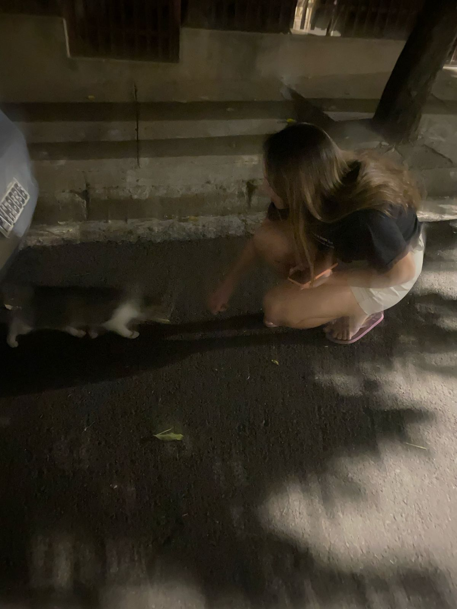
yes, you are my beginning, middle and end
17/05/2025 - Dia 04
Bom dia..
acordei com saudade de novo..
você tava muito linda ontem, e estava combinando comigo rs
Mal posso esperar para te ver novamente, pra poder ver o seu sorriso dnv..
Espero que tenha gostado das flores, do cone, e mais ainda, de passar tempo comigo..
Espero que tenha feito seu devocional, ou se não, que faça hoje..
Conversamos ontem e é bom relembrar: não quero que pense que eu estou "seguindo a vida".. pq não. Eu to parado no tempo te esperando..
Penso em você em cada segundo, em cada instante, cada vez que eu pisco, você vem na minha mente..
Inclusive, sonhei com você hoje kkk, to chorando agora escrevendo kkk..
Você tava linda nos meus sonhos, com um sorriso perfeito, seu cabelo tava perfeito, seus olhos brilhavam para mim novamente...
Não sei como vai ser hoje, ficar perto e longe de você ao mesmo tempo, so não quero ficar igual um esquisito kkkk
Você republicou quinta "não deixe outro homem se casar comigo", e eu republiquei a mesma coisa ontem..
Se eu puder te assegurar de algo, eu quero que fique segura sobre isso.
Nenhum outro homem vai se casar com você, mas sim, eu. Estou aprendendo e mudando meus erros pra isso.
Não quero te fazer mal novamente, não quero te deixar confusa novamente.. Quero poder cuidar de você, rir com você novamente, te abraçar bem forte e ver seu olhar de neném novamente..
Inclusive, não e querendo dizer nada, mas você me olhou assim ontem dnv kkk..
Você mexe comigo, me bagunça todo, me desestabiliza todo, me deixa sem chão e me leva ao ceu ao mesmo tempo...
Sei que ainda tem medo, ainda tem o receio de que eu não mude, ou so esteja assim pq tudo isso aconteceu..
A verdade é que sim, mudei pq tudo isso aconteceu, isso é inegável, mas vou continuar assim independente do que aconteça dessa vez...
So espero poder ter mais uma chance de te mostrar isso, afinal, se tem alguém que merece essa minha "versão", esse alguém é você..
não quero te enganar com as minhas promessas mais, não quero te prender com promessas mais.. Quero te mostrar que vai ser diferente, e espero já poder estar mostrando pelo menos 1% disso..
Ah, e não, não pense que eu to "convencido" de que você vai voltar atras, afinal, não quero que você volte "atras" pra ser igual antes, como eu disse, não quero te enganar mais, então, não quero que você volte para que acabe da mesma forma daqui alguns meses..
Quero que possamos ir mais fundo, mais longe dessa vez..
Sim, você me perguntou ontem e sim, minhas piadas era pra não mostrar como eu realmente estava..
Mas é aquilo, se eu to orando por isso, eu preciso ter fe..
Se até meu pastor crê nisso, eu também preciso crer..
Quero crer nisso.
Você já viu quase todas as minhas faces, so faltava a minha mais "obscura", e essa é a minha face sem ego, sem orgulho.. A face que vai tentar de tudo.. a face mais fragil..
Não quero que pense que te entreguei flores pra te impressionar ou te enganar.. Mas sim para que veja que eu te amo, e to mudando pela gente..
Espero que não pare de pensar em mim.. até pq eu não paro de pensar em você nem por um segundo..
Ainda continuo aqui, te esperando.
our bodies still connect.
will you be my beginning, middle and end?
16/05/2025 - Dia 03
Pode clicar na imagem?
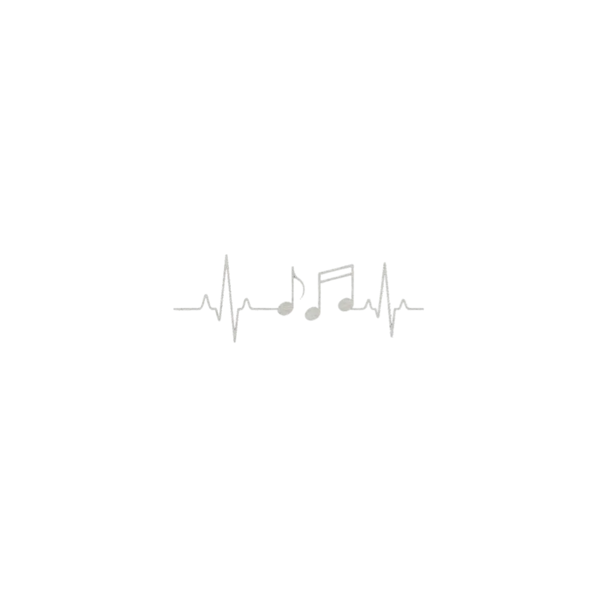
Bom dia mais uma vez..
Ainda sinto sua falta..
Sinto falta de tudo na minha vida, afinal, ela foi construída com você..
Odeio me abrir com todo mundo, só conseguia fazer isso com você, mas dessa vez não tive saída, tive que contar pros meus pais, pro seu né kk..
O mais engraçado é que eu queria que o yann fosse o primeiro a saber, porém, não tive tempo de contar pra ele ainda, mesmo ele já sabendo..
Enfim, quero que saiba que sinto sua falta, quero que saiba que meu amor ainda tem a mesma intensidade por você..
Quero que saiba que ainda choro por você todos os dias..
To sem mexer mt no celular e rede social, so uso pra te stalkear mesmo kkk..
Ontem a Monique me mandou msg perguntando o que aconteceu, mas nem visualizei ainda.. Samuel me ligou, não atendi, me mandou áudio e mensagem e tals perguntando o que aconteceu..
Mas a verdade é que eu não quero ficar falando, quero ficar quieto só, não quero me distrair pra "passar" tudo isso, pq eu quero sentir, quero que doa em mim e que doa muito mesmo, pq eu sei que cada dia foi real, cada risada foi sincera, cada palavra foi verdadeiro, então eu quero sentir tudo..
Não sei ainda se te mando mensagem, se você quer receber minha notificação.. mas to preocupado com você..
É estranho ter cuidado de você a vida toda e agora não poder saber como você esta..
Enfim, to entendendo tudo, aprendendo, um passo de cada vez, mas to aprendendo.. Como falei pro seu pai ontem, quero viver isso pra sempre..
Fui falar com o meu pai e ele praticamente acabou comigo kkkk, mas ele tem total razão..
Fica tranquila, não vou te pressionar em nada, quero que se reconecte com Deus e com você mesma.. enquanto isso, eu to tentando fazer isso também..
Mas quero poder fazer isso com você também o quanto antes..
Não quero que retomamos algo pra ser igual de sempre, se é pra mudar, então quero que seja diferente dessa vez..
Enfim, te espero às 21h hoje, com muita fome kk...
Saiba que eu ainda te amo demais, mais que tudo.
É só em você que eu penso.. Não quero que pense que não to mandando nada por conta que to "esquecendo", muito pelo contrario.. quero respeita seu tempo só.. não sei se voce quer que eu te mande algo..
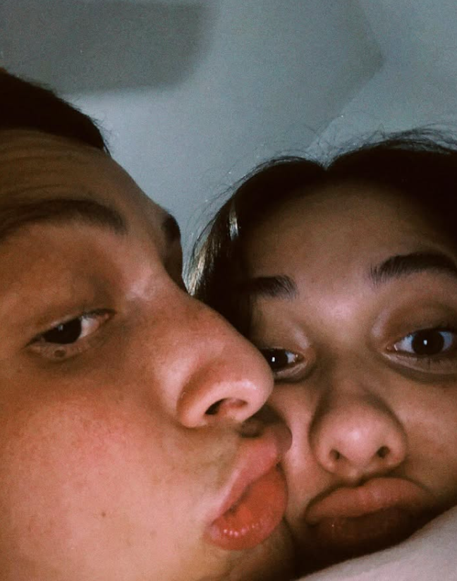
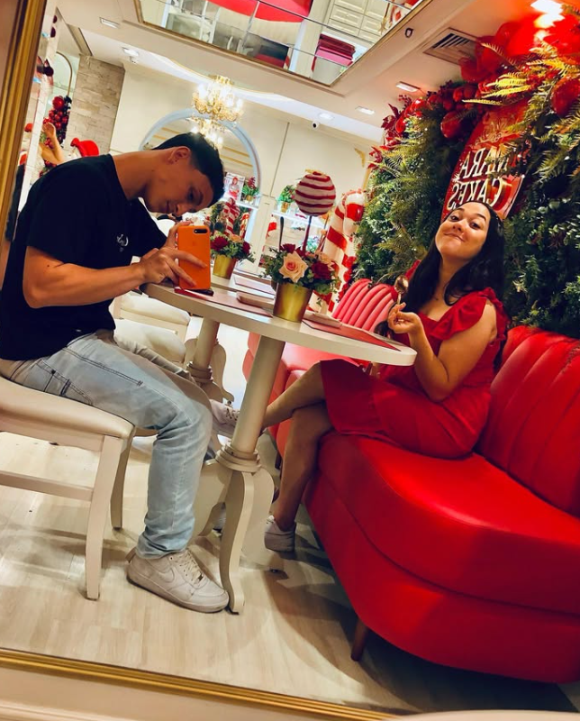
Ainda penso em você todos os minutos, eu te amo.
Ainda to te esperando..
não, eu não consigo parar de pensar em você nem se quer por um minuto, e eu não quero parar.
eu quero cuidar de você novamente, quero que você seja meu começo, meio e fim.
sinto sua falta todo minuto, sinto saudade todo minuto..
não pense que estou "seguindo" sem você, nem nada disso.. Estou aqui, parado, esperando você voltar para mim.. esperando você ser minha novamente..
Mas independente de tudo, você sempre será a minha princesa..
Olho nossas fotos toda hora, toda manha, toda tarde, toda noite, toda madrugada..
Prometo que tudo isso vai passar, prometo cuidar de você para sempre.
E não, não vou deixar outro homem se casar com você..
você é o amor da minha vida, você e a melhor coisa que já me aconteceu, é a alegria dos meus dias, é o meu pedido de oração, é a dona de todo o meu coração.
Desde sempre.
Não pense que esta sendo fácil não te mandar mensagem, não pense que não estou ansioso para te ver hoje, não pense que não estou com saudade, não pense que estou bem sem você, não pense que estou "livre" sem você..
Muito pelo contrario, mal posso esperar para poder te abraçar novamente e assistirmos um filme juntos.. e dessa vez, vamos maratonar Harry Potter e eu vou aprender tudo kkk
Estou com saudades minha princesa. Muita saudade.
will you be my beginning, middle, and end?
15/05/2025 - Dia 02
Bom dia novamente..
Espero que esteja bem, esteja comendo bem, dormindo tranquila, espero que esteja conseguindo focar no trabalho, na faculdade.
Ainda sinto sua falta, e é inevitável..
Mas entendo que é o melhor por agora..
Fiz meu devocional hoje, orei novamente às 03h até umas 4h quase, e de verdade, meu coração está "confortado" ate agora..
Mas so quero que saiba que ainda sinto sua falta, falta do seu cheiro, da sua risada, dos seus olhos, da sua presença.. sinto falta da sua mensagem todos os dias..
Mas fica tranquila, eu não vou te incomodar direto..
Como a gente falou ontem, eu to mudando, to aprendendo com tudo e por mais que eu queria mt dizer pra você voltar agora.. Eu digo pra você se preparar, buscar Cristo, correr atras dele que nem louca..
Se Deus quiser (e eu quero tanto que ele queira), nossos caminhos se cruzam novamente, ou até, nunca se desviaram, so pegaram rotas diferente que acabam no mesmo lugar..
Como te falei ontem, eu vou estar te esperando, independente do que aconteça.. Ontem você me disse que se eu encontrar alguém etc.. que não é pra me privar.
Mas a real, eu não quero encontrar ninguém, não quero conhecer ninguém.. eu quero reencontrar Jesus e você.
Eu te amo minha princesa, saiba que você sempre vai ser a minha princesa.
Que Deus te abençoe e te proteja sempre.
E quem sabe em breve, eu possa proteger também..
Obrigado por me mostrar a vida, me mostrar como e sorrir leve, obrigado por cada "eu te amo" e por espantar todos os meus medos..
Acho que ontem falei algo errado, quando disse que estávamos nos deixando da mesma forma que nos encontramos.. Mas na verdade não, não foi em vao tudo que vivemos. Você me mostrou o significado da vida, a alegria que ela tem, com cada sorriso seu.
Durante todas as minhas orações, e até quando olho pro nada e começo a pensar em tudo, conversando com Deus.. Algo me diz la no fundo, que ainda vamos vencer juntos, e não vai demorar muito..
Como eu disse ontem, seu espaço sempre vai estar aqui guardado pra você, afinal, é como se meu coração já soubesse seu tamanho, pq vc entrou perfeitamente nele.
Enfim, eu vou estar te esperando, e me preparando em Cristo cada dia, inclusive, meu devocional foi bom hoje.. espero que o seu seja também..
Inclusive, quando for fazer, da uma lida em João 2:19, mexeu muito comigo.. Me fez pensar que talvez estejamos destruindo tudo agora para Deus restituir tudo..
Enfim, eu te amo pra sempre, tá?
Feliz dia 15 :)
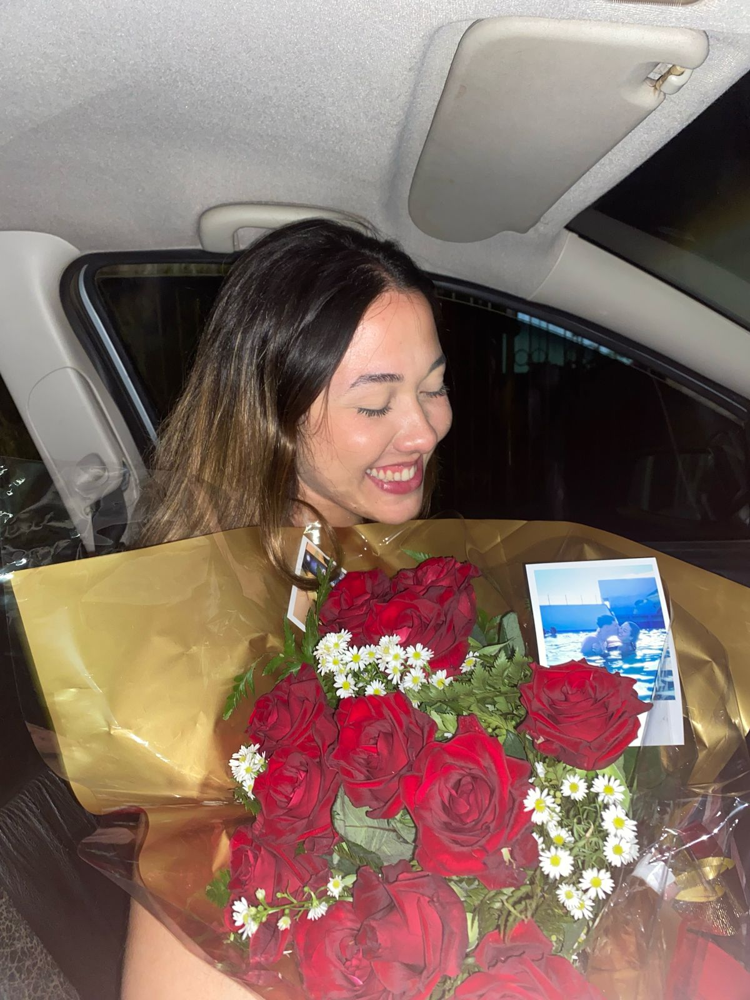
Eu to te esperando.
14/05/2025 - Dia 01
Bom dia..
Como você tá?
Já sentiu minha falta hoje?
Já sentiu vontade de me mandar mensagem?
Já pensou em mudar de ideia em algum momento?
Desculpa, não sei como reagir..
Não sei como seguir sem você..
Você não me ensinou a viver sem você..
Tive a pior noite da minha vida hoje.. Se dormi 3h no total foi muito..
Acordei 01:30 e fui dormir 02:20, acordei 03:00 e fui dormir quase 04:00, acordei 06:00 e fiquei esperando o seu bom dia, mas ele não chegou..
Fui dormir umas 06:35 e acordei 07:00 dnv, eai não consegui dormir mais..
Meu olho ta latejando, tremendo e tudo, mas não consigo dormir.. Toda vez que eu fecho os olhos, eu penso em você, se eu abro os olhos, eu penso em você...
Eu quero tanto te mandar mensagem, mas não sei se você vai responder.. Não sei se você quer que eu mande..
Desculpa ter demorado tanto para agir..
Eu orei tanto pra Deus essa noite, eu implorei para que você voltasse..
Chorei tanto pra Ele te trazer de volta pra mim.
Vi que você arquivou as nossas fotos no feed já.. Caramba, não consigo acreditar que isso é real.. Não consigo viver sem você..
Toda hora que meu celular acende, meu coração gela pra que seja você..
Por favor, não fica sem falar comigo.. Me manda mensagem, manda que ta com saudade, manda que chorou por mim.. manda que pensou em mim quando foi fazer algo, pq eu penso em você a todo momento..
O dia ta tao estranho, to no trabalho, mas parece que to em outro mundo..
Não consigo sorrir, não consigo levantar o olho direito..
Parece que eu escuto a sua voz me chamando a todo momento..
Ou que a qualquer momento eu vou receber um "oi momor"..
Eu quero tanto que isso aconteça..
Eu quero muito te mandar mensagem, muito muito muito.. Eu não consigo ser assim, não consigo ficar quieto, não consigo so "aceitar" que você não é mais minha..
Eu não te contei ontem, mas eu to orando pela gente desde 02/05 às 03h da manhã para que Deus restaurasse o nosso namoro..
Eu vou te amar pra sempre,
Meu coração sempre vai estar palpitando por você,
Eu sempre vou ficar elétrico quando ouvir o seu nome,
Caramba, to chorando na mesa, do lado da Mariana kkk
Desculpa não ser tão forte, é que você sempre foi a minha força..
Por favor, me manda mensagem, nem que seja um "oi", mas me manda.. Eu sinto tanta a sua falta..
Eu quero muito voltar atras e consertar tudo que eu fiz, mas eu não posso..
Por favor, fica comigo, eu prometo que vai ser diferente..
Eu não consigo ficar sem você..
É como se os próximos 50 anos fossem arrancados de mim..
Eu tenho tanto pra falar, tanto tanto...
Só me manda mensagem, por favor.
Me diz pra mim te esperar, pq vc vai voltar..
Eu vou esperar você sempre, eu sempre vou estar com os braços abertos pra você..
Eu to esperando você voltar pra cá, to esperando você falar que quer tentar novamente..
Entao vamo fazer tudo diferente de uma vez por todas..
Eu nunca te perdi assim, nunca passei por isso, nunca fiquei um dia assim..
Eu sei onde errei, sei onde preciso acertar e como acertar, então me deixa cuidar de você..
Eu prometi fazer isso pra sempre, lembra?
Lembra quando eu fiquei mais de 50 minutos me declarando pra você no sofá da sua casa?
Lembra quando eu prometi ser o melhor marido do mundo pra você?
Lembra quando eu recebi meu primeiro salario na ACE e te levei no shopping?
Lembra quando eu tirei minha carta e te busquei no Moacyr?
Lembra quando eu fui na sua casa 03h da manha so pra te dar um abraço e te levar um chocolate e um girassol?
Lembra quando eu fiz mais de 50 cartinhas pra você no Natal?
Lembra quando você disse que ano gostava de caldo de cana e tomou metade do meu?
Lembra?
Você se lembra disso tudo meu nenem?
Entao por favor, me manda mensagem, vamos voltar atras e consertar tudo..
Eu não to chateado com você, não to magoado, nem bravo..
Eu to te esperando mandar mensagem mudando de ideia, pq tudo que eu mais quero é escutar sua voz dnv..
Quero tanto escutar você falando com voz de neném..
Quero tanto escutar pelo menos mais uma vez um "aaah pu favô"..
Você sabe que quer voltar, que por mais que seja difícil, ainda dá pra voltar sim, se não, não teria me beijado ontem, não teria me abraçado tao forte ontem.. Não teria me dito que se voltarmos, vai ser pra casar.. E tudo o que mais quero e casar com você..
Não teria dado risada e brilhado o olhar quando eu disse "Entao casa comigo agora"..
Eu ainda sou o homem da sua vida e você sempre vai ser a mulher da minha vida, então volta pra casa mor, volta pra mim..
Eu to com o moletom que você me entregou ontem..
Me doeu tanto ter pego ele, pq ele ta com você desde o primeiro dia..
Mas eu ainda vou te devolver ele, afinal, você rasgou tudo a manga po kkkk..
Vou socar de perfume dnv quando te devolver..
Ah meu amor, eu não sei ficar sem você, não consigo mesmo..
Volta comigo e me da a ultima chance dnv.. Eu vou mais fundo dessa vez. Eu não vou mais brincar com promessas..
Eu quero cuidar de você, quero por seu cabelo pra tras da orelha, quero te fazer carinho igual ontem enquanto estávamos de pe.. Quero chorar olhando nos seus olhos, porém, poder te abraçar e beijar depois..
Você sabe que ainda é apaixonada em mim, e que la no fundo, ainda me enxerga como seu esposo, e quer muito que seja eu. Entao me deixa fazer seus olhos brilharem novamente como ontem, porém, dessa vez, pra sempre.
Eu estou te esperando meu amor, pra sempre.
Você sempre vai ser minha princesa.
Sinto sua falta minha pequena, minha bravinha, minha pitica, minha pitoquinha, minha professora, minha namorada, minha noiva, minha esposa..
Volta pro seu lar, eu to te esperando com os braços abertos.
Me manda mensagem, por favor.
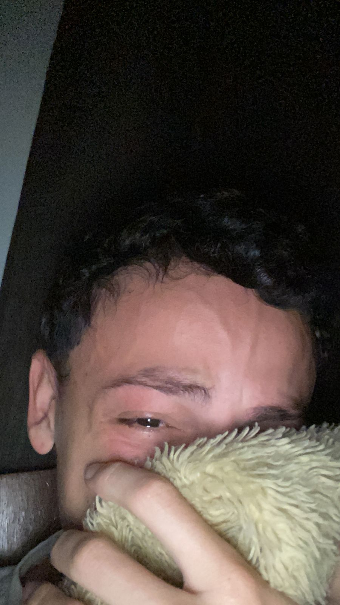
Eu to te esperando.
Cartinha 💌
Ana Clara
Eu vou te amar por todos os meus dias.
E dessa frase que eu quero se lembre, independente dos momentos que estivermos passando, independente do que estiver acontecendo, de onde estivermos, quero que se lembre dessa frase.
Eu sei que tenho meus erros (e muitos), e a verdade é que eu me sinto um covarde por não conseguir mudar imediatamente.. sabe, pra quem cresceu em uma família bagunçada e sonha em mudar tudo isso e criar uma família abençoada, é uma merda estar em situações como essa, pq parece que tudo deu errado..
Eu me sinto um covarde por não me declarar olhando no seu olho, por não te dar flores todo dia, por não ser o cara mais gentil, mas a verdade é que eu não faço isso por “mal”, muito pelo contrário, eu queria mt olhar no seu olho agora e dizer o quando eu te amo, dizer tudo o que você significa pra mim..
Sabe, por mais que eu não queira admitir isso, talvez você esteja certa, eu só acordo quando tô perdendo.. preciso mudar isso, consertar o que seja, pq sério, eu aceito perder qualquer coisa, mas não aceito perder você..
Eu chorei o dia todo hoje, toda hora, escondido pra ninguém ver, mas chorei.. chorei por medo de não te ter mais, por lembrar do começo, por lembrar dos nossos dias que a gente torcia pra não acabar mais, dos dias que a gente orava juntos, sorria juntos, se abraçava, se beijava, falava com voz de neném.. quando a única coisa que importava, era que o outro estivesse bem..
Sabe, me lembro de quando ficávamos mais de 1h na calçada da sua casa pra se despedir.. de quando acordávamos 07h da manhã só pra podermos dormir juntos na sua casa.. de quando andávamos de ônibus pra sair e era mágico, afinal, tínhamos um ao outro.. me lembro do nosso aniversário de 2 anos, aquele foi um dos dias mais especiais da minha vida.. andando 50 minutos só pra chegar no manzini, você estourando ketchup na minha blusa escrito “A”, a gente voltando correndo pra pegar o ônibus e dps ficando juntos em casa, cansados pra caramba, mas descansando um no outro..
Me lembro do medo que você tava de entrar na minha casa pra conhecer minha família no primeiro dia, com sua blusa ciano e uma calça de duas cores, você tava fantástica aquele dia.. me lembro do meu pai te conhecendo e falando “oi filha”.. do Yann perguntando se podia falar palavrão perto de você.. me lembro da helo sentindo ciúmes e hoje só pergunta de você, inclusive, queria q vc viesse hoje pra pintar bobie goods com ela.. me lembro de mandar msg pro Tonho enquanto ia pra igreja e mandar “Dia de começar namorar”.. me lembro de chegar em casa e mudar seu nome no WhatsApp para “amor”.. me lembro do primeiro beijo, do primeiro açaí, primeiro churros.. são tantas lembranças.. me lembro da nossa primeira briga pq não fui na sua casa comer pastel..
Me lembro de irmos pra escola juntos, torcer pro tempo passar rápido pra ficar o intervalo da escola juntos, de mudar pra sua sala e sentar atrás de você, de comprar paçoca na escola..
Cada dia é mágico com você, cada segundo, mesmo bem ou mal, tendo você, tudo é mágico.. você me mostrou que a vida pode ser boa, mesmo em meio ao caos que eu vivia..
Eu te fiz tantas promessas que não consegui cumprir e eu me culpo tanto por isso.. me sinto um merda quando vc relembra alguma promessa que não fiz..
Mas, independente do momento, eu ainda acredito em nós. Ainda acredito no nosso amor, ainda acredito em você, ainda acredito na nossa história.. se não, não daria tanta questão de ficar..
Não quero começar com alguém, quero recomeçar com você inúmeras vezes, quantas vezes for necessário. Não existe dor maior que viver sem você.. a vida não tem graça sem você..
Quando disse que te amo para sempre, significa que me entrego pra sempre pra você, que me coloco a disposição de mudar sempre por você, até que eu seja tudo aquilo que você merece.. afinal, me lembro de nós dois dizendo antes mesmo de namorar “se não for você, eu não tento mais”.
Quero recomeçar tudo, deixar as mágoas pra trás, esquecer tudo isso, recomeçar, com o nosso amor, com a nossa alegria e de uma vez por todas, colocar Deus na frente..
Tanto você, quanto eu, temos propósitos em Deus, sabemos disso, e sabemos que eles já se alinharam, não é atoa que estamos juntos a 4 anos quase.. nós dois nos afastamos juntos e precisamos voltar juntos.. não quero que seja apenas mais uma das minhas promessas vazias, mas que seja verdadeira.. afinal, namorando ou não, eu quero continuar sendo cristão. Mas eu quero mt mais ser cristão ao seu lado.. quero te honrar, te amar, te cuidar, ser cabeça..
Eu quero orar com você, quero que tenhamos experiências com Cristo juntos, quero ir na igreja que vc tanto quer quando mudarmos para Maringá, quero louvar com nossos filhos, quero escrever versículos na nossa casa, quero viver tudo isso com você.. quero liderar com você, quero que sejamos reais e constantes, um ajudando o outro..
Quero viver pra sempre com você, construir mais e mais memórias, e não só memórias, quero criar histórias com você, quero criar uma vida..
Me desculpa pelas vezes que o meu amor te machucou, te chateou, te decepcionou.. somos dois recém adultos aprendendo a se amar.. amores verdadeiros e permanentes não são perfeitos por não terem brigas e desentendimentos, mas sim por passarem por cima disso, e sei que vamos passar por isso, afinal, já passamos por tanta coisa juntos.
Prometo cuidar de você como você merece, honrar você como merece.
Prometo ser verdadeiro.
Prometo te amar até o fim da minha vida.
Por favor, acredite em nós, acredite em nossa história pra sempre, eu prometo melhorar por você. Somos intensos demais pra acabar por brigas. Acredite em nós.
Eu serei um novo homem pra você, serei seu companheiro, seu companheiro na fé, seu amigo..
Ainda te olho com os mesmos olhos do começo, ainda sinto frio na barriga como no começo, sinto sua falta como no começo..
Desculpa se meu amor te machucou algumas vezes.. não foi por mal, não foi por querer, eu sou só um menino tentando amar a garota da minha vida..
Fica comigo, até o fim de nossas vidas, até a última estrela do céu se apagar
Eu errei muito com você, falhei várias vezes, fiz promessas que não levei a frente, repeti palavras diversas vezes, inclusive “desculpa”..
Sei que não tem motivos pra acreditar em mim, não tem motivos pra confiar que eu vou mudar.. mas eu prometo que eu vou. eu nunca senti tanto medo igual tenho agora, nunca senti tudo isso.. senti a dor da sua falta como se fosse uma faca no meu peito.. senti a dor do seu olhar pra mim.. os mesmos olhos que um dia brilharam pra mim.. senti falta de tudo isso.. senti falta de nos..
Aquele dia na célula, eu disse que tinha muito medo de viver com medo.. e a verdade é que eu tô tremendo de medo.. medo de você pensar que são só palavras.. medo de você não acreditar em mim.. medo de te perder..
Talvez na hora da raiva, não percebemos, mas sim, eu realmente tenho mt a coisa a perder se eu perder você..
A minha oração todos os dias, é: Pai, pode me tirar tudo, menos ela.. eu já perdi tudo, não me deixar perder ela..
Você é a pessoa mais importante na minha vida.
Desculpa não saber te amar da maneira correta..
Mas eu já amei da forma certa também, afinal, você se apaixonou por mim, você me amou, então me permite te amar da forma correta dnv..
Dizíamos que se um dia acabasse o brilho, jogaríamos glitter.. eu prometo ser seu glitter..
Eu notei quando parou de me elogiar,
Eu notei quando parou de cobrar,
Eu notei quando parou de dar boa noite,
Eu notei quando parou de dizer “te amo”,
Eu notei quando se afastou,
Eu notei tudo, e não agi na hora.. me sinto um covarde por isso.. mas me deixa recuperar.. me deixa curar aquilo que eu feri..
Eu prometo nunca mais quebrar seu coração..
Eu prometo cumprir minhas promessas.
Eu prometo ser melhor por você, Ana clara.
Por favor, acredite em mim, uma última vez.
Me deixe te fazer a garota mais feliz do mundo.
Até o fim, eu te amarei.
Você quer um amor te ame intensamente, e eu te amo demais. Eu choro até soluçar por você.. eu tremo de medo de ficar sem você.. eu te amo e te vivo..
Eu planejo te pedir em casamento em 1 ano, casar em 2 anos.. entao me deixa realizar esse sonho.. vamos realizar isso juntos.. eu prometo que seja mágico outra vez.. eu prometo que não será mais uma promessa vazia.. eu não vou brincar com promessas relacionadas a você.
Eu te amo.
Sinto sua falta, sinto saudade de você a todo momento, a todo instante. Mal consegui dormir direito hoje e já era de se esperar.. Já disse que tenho medo de viver com medo, e eu tenho pavor de um dia não te ter mais..
Aquele dia na célula, você mesma disse que eu seria um bom marido e um bom pai pros seus filhos.. Então por favor, fique..
Você diz que quer ser amada em voz alta, e ontem eu gritava no quarto enquanto chorava por você.. estou com olheira de tanto chorar por medo de não te ter mais.. Então, acho que isso também é amar em voz alta.. E saiba, eu gritaria amor por você..
Estou cansado de não cumprir minhas promessas, enquanto fazer você se sentir amada todos os dias, não deveria ser nem promessa.. Mas eu te amo, do meu jeito, do meu jeito tonto, brincalhão, bobão, mas eu te amo. Te amo mais que tudo nesse planeta, te amo mais que qualquer pessoa, mais que qualquer lugar, mais que qualquer ambiente, sensação e tudo mais..
Eu não suporto ficar brigado com você, quanto mais ficar sem conversar por praticamente um fim de semana inteiro, imagina uma vida toda..
Tudo que eu sei na minha vida, foi você que me ensinou, ou aprendi junto com você.. Você é a primeira pessoa que eu senti algo, que eu criei planos, que eu tenho nome pros filhos já, tenho lugar pra morar já.. Aprendi a voltar tarde pra casa voltando da sua casa às 04h da manhã.. Aprendi a conhecer restaurantes com você, inclusive, todos que eu conheço, foi com você.. Aprendi a gostar de Açaí por causa de você.. Aprendi a escrever poemas, escrevendo para você, e serio, eu ainda tenho muitos pra escrever.. Aprendi sobre Cristo com você.. Aprendi a fazer presentes com você.. Aprendi a comprar flores por causa de você.. Aprendi a ser amado por você.. Mas ainda estou aprendendo a amar..
Eu não consigo enxergar uma realidade sem você, não consigo imaginar um dia sem você, sem ouvir sua voz, sem sentir seu toque, até a sua respiração me acalma..
Sábado, mesmo que você não quisesse ficar perto, enquanto estava deitada no meu peito dormindo, eu beijei sua testa inúmeras vezes enquanto prometia pra mim mesmo te proteger pro resto da minha vida. Prometia nunca mais fazer você se sentir confusa em relação ao amor.. Prometi nunca mais machucar você com o meu amor..
Seu silencio é a maior dor que eu posso sentir, desde o começo sempre te falei isso, que odeio ser ignorado.. Cresci vivendo isso e senti a dor desde pequeno, porém, nada é comparado quando a única coisa que eu mereço, é o seu silencio.. Prefiro que fale comigo, nem que seja pra brigar, pra xingar, reclamar, mas que fale comigo e eu possa ouvir sua voz, pq mesmo brigando e tudo mais, a sua voz me acalma..
Desculpa ser tão insistente em fazer você ficar e tentarmos mais uma vez, é que eu não consigo acreditar que você tenha entrado na minha vida em vão, ou pra ser um "aprendizado" o que um dia eu chamei de tudo.. Desde a primeira vez que te vi, soube que seria você, e desde o primeiro abraço senti que iria te amar para sempre, com toda a minha alma.. talvez, essa tenha sido a única promessa que eu cumpro ate hoje ne kk..
Nunca fui de chorar, mas por você, eu não consigo segurar minhas lagrimas.. Não consigo economizar lagrimas quando se trata de você..
Eu te amo muito mais do que você pode imaginar, sempre te disse isso, porém, as vezes, não consegui demonstrar tudo isso..
Sabe, eu já me imaginei te falando tantas coisas, realizando tantos projetos, comemorando suas conquistas, comemorando as nossas, chorando juntos, rindo juntos, fazendo de tudo, juntos.. Já arrisquei tudo por você, mesmo sem ter muita coisa.. Seria terrível te perder por não ter me declarado antes..
Existe a teoria dos 3 amores, porém, eu não quero chegar nem no 2º, até pq, acredito que você foi o meu primeiro, segundo e agora terceiro.. Aprendi muito com você, falhei muito com você, mas agora, quero te amar pra sempre pra valer.
Quero viajar pra muitos lugares com você, Maringá foi só o começo, quero viajar de balão com você, quero soltar aqueles balão Japonês com você, quero conhecer Santa Catarina com você, quero ir para o Chile com você, pra Itália, conhecer todos os lugares do mundo com você, mais também quero comer muito espetinho com você ainda, quero completar muitos cartõezinhos da Arca de Noé com você, quero comer muitos churros sentado na praça com você ainda, quero voltar no Mediterrâneo muitas vezes ainda.. E mais ainda, quero terminar o dia no meu lar mais gostoso, ou melhor, seu abraço...
Desculpa te ferir com algo que prometi te curar pra sempre, mas eu te garanto, nunca mais te ferir..
Quero te ver conquistando tudo, quero te ver com a sua carta, com sua biz, com o seu diploma, com você chegando em casa com a noticia de que ganhou uma sala na escola.. E quero te levar pra comemorar nesse dia.
Já disse isso outra vez, mas quero chorar com você enquanto olhamos o teste de "positivo" no banheiro da nossa casa.. Quero chorar com você quando pegarmos a chave da nossa casa.. Quero comer pizza na nossa primeira noite em casa.. Quero dormir uma noite inteira com você deitada no meu peito, enquanto eu te faço um cafuné.. Quero acordar ao seu lado todos os dias da minha vida..
Por mais que eu tenha meus erros, minhas falhas e tudo mais, tudo que eu mais quero é poder me casar com você e construir uma família linda, com o nosso Matteo e a Amelia, e quem sabe até um 3º filho..
Sabemos que nos dois não somos como a maioria dos jovens por ai, que querem perder tempo com coisas erradas e tudo mais.. Somos dois jovens que querem melhorar e ser feliz, e mais ainda, eu quero te fazer feliz.
Eu te amo mais que tudo Ana Clara, e sim, ainda tenho MUITO pra falar..
Eu te amo demais meu amor, não desiste de mim por conta das falhas, por se tornar cansativo, por se tornar chato.. eu te amo mais que tudo, não aceito perder você. Não aceito uma realidade onde você não é minha.. onde eu não posso olhar nos seus olhos e dizer o quanto eu te amo.
Por favor. Fique.
Eu te peço com todo o meu coração, fique. Você é tudo que eu sempre sonhei, você é o meu mundo, você é meu tudo..
Lembra de como foi incrível a viagem pra Maringá, e só fazem 3 semanas.. lembra como foi andar de patinete a cidade inteira, como foi conhecer o restaurante do harry potter que você tanto queria.. lembra como foi no smash it.. lembra como foi conhecendo os shoppings.. lembra de como foi tirando a foto no homem de Lata.. como foi andando de pato..
Por favor, me dá a última chance de te fazer feliz, eu não vou falhar. Eu não vou precisar pedir mais.. eu não vou errar mais.. por favor, acredite em mim, eu vou ser o melhor pra você..
Já tem 2 semanas que eu tô me apegando mais com Deus, eu quero isso pra minha vida, pras nossas vidas..
Me deixa te amar pra sempre.
Eu tô berrando no quarto nesse exato momento, já faz mais de meia hora. Isso é amar em voz alta.. eu não sei viver sem você, então por favor, me deixa consertar. Isso é amar em voz alta, e saber recuperar quando perde, é saber acordar e ver o quão importante você é. Você significa muito pra mim..
Eu não aguento viver sem você, eu não consigo. Eu não vou conseguir apagar as fotos, não vou conseguir arquivar as fotos do insta, os destaques.. não vou conseguir seguir em frente sem você.. e isso nãos é chama dependência emocional, se chama amor verdadeiro. Amor que ama, que chora, que implora, que clama.
Eu te amo muito muito muito mais do que você pode imaginar.
Me deixa te proteger pra sempre, eu prometo cuidar de você.
Eu tô implorando pra Deus me dar uma nova oportunidade, pq eu prometo a Ele que não vai ser em vão.. se for, Ele irá me cobrar no dia final, então eu não vou furar essa promessa.
Eu vou valorizar cada segundo, cada minuto, cada hora, cada dia..
Eu vou te amar intensamente, como eu amo.
Me desculpa não ter me declarado antes e deixar tudo isso acontecer.. mas eu ainda tenho muito a me declarar pra você, e a poesia mais pura que posso te dedicar, é o meu choro em voz alta.. são meus olhos inchados por causa de você..
Me dá mais uma chance, eu cansei de pedir mais chances e não valorizar. Eu vou valorizar dessa vez. Eu vou fazer valer a pena. Eu vou fazer você sentir que acertou em ficar. E não só durante um dia, uma semana, um mês, um ano.. pra sempre!
Não vou mudar em uma semana, um mês.. vou ser pra sempre, pra eternidade. Só confia em mim, uma última vez..
Me deixa te abraçar com o coração leve mais uma vez..
Eu preciso do seu abraço, tanto quanto o ar que respiro..
Por favor meu amor, confie em mim.
Eu te amo mais que tudo..
Acho que todas as vezes que brigamos e ficamos a um passo de terminar, nunca doeu tanto como agora.. todas as vezes eu estava convencido de mudar, mas agora, meu coração está convicto de que não quer passar por isso dnv, não quer sentir esse medo dnv.. por isso, eu entendi o que você diz, quando fala “você vai perder muita coisa”.. realmente, eu tenho muito a perder..
Mas me deixa ganhar você novamente.
Eu prometo que vai ser diferente de tudo que você já viu.. de tudo que eu já prometi..
Não podemos terminar sem antes te dar um buquê de tulipas e conhecermos a rota das frutas..
Tenho muita coisa pra dizer ainda, mas agora será espontâneo, olhando nos seus olhos.
Não consigo imaginar um mundo sem você.
Não consigo imaginar uma realidade sem você..
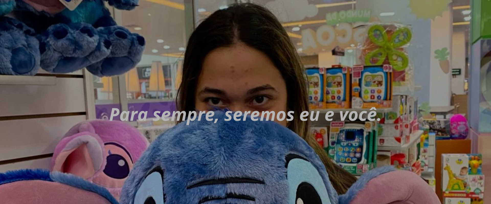
A verdade é que foquei tanto em tentar se segurar, que esqueci o real motivo de te fazer ficar.
Desde sexta-feira, eu comecei a ler todas as nossas conversas de 2022/2023 tentando entender aonde foi que eu errei esse tempo todo, e foi ai que eu descobri..
Foquei tanto em ser cuidado, enquanto esquecia de cuidar..
Sabe esse olhar da foto? Ele não estava dizendo "eu vou cuidar de você", mas estava pedindo "por favor, cuida de mim" esse tempo todo..
Porém, demorei pra entender..
Esse mesmo olhar que eu tanto me perdi, tanto sonhei, tanto queria ver dnv e não entendia o motivo de não conseguir..
Foi ai que entendi.
Entendi que não preciso focar em ser cuidado, mas sim em cuidar de você.
Meu amor. Você não tem ideia do que eu sinto por você,
Do quanto você significa pra mim
Do quanto você é importante
Do quanto você é desejada
Do quanto você é incrível nos meus olhos
Então meu amor, por favor, me deixe cuidar de você, uma ultima vez.
Não consigo me despedir, não consigo deixar você ir embora, desculpa.
Mas não vou arriscar te perder dnv..
Não vou te manter aqui pra ser o mesmo de sempre..
Em todas as vezes que a gente brigou e chegou a um passo de terminar, eu sempre chorei, falei muito e tals, mas acho que nunca caiu minha ficha de verdade..
Acho que nunca acreditei que você realmente iria embora
Porém, dessa vez, vi você escapando dos meus braços,
Vi você saindo sem que eu pudesse segurar
Abri meus olhos e vi que meu sonho estava se tornando pesadelo
Não consigo viver sem você.
Não consigo imaginar uma realidade onde não exista eu e você.
Não consigo imaginar como é acordar sem o seu "bom dia mor", ou "olha o que o Matheus fez hoje", "to atrasada"..
Não consigo viver sem você..
Acho que nunca escrevi tanto na minha vida kkk.. já foram mais de 253 linhas e 21k de letras..
Mas a verdade é que se você achar que são só mais palavras, será tudo em vão..
Não quero mais te enganar com as minhas promessas..
Não quero mais criar ilusões pra você ficar..
Não quero te manter só por mais 4 meses
Quero levar isso pras nossas vidas, mas principalmente, pra minha.
Eu juro com todas as minhas forças que eu queria ter acordado antes.
Juro nunca mais brincar com promessas
Juro nunca mais arriscar te perder.
Já li esse texto mais de um milhão de vezes, e peço que você guarde ele, para que caso eu não cumprir algo que esteja aqui, você me cobre.
Você também pode guardá-lo para lembrar o quanto você é importante para mim.
Mas eu te garanto, que esse é só um dos milhares de texto que eu tenho pra te escrever..
Por favor, me deixe escrever pra você, pelo menos assim, eu consigo expressar um pouco do que eu sinto por você..
Você é a pessoa que eu mais amo no mundo, que eu mais amei na minha vida..
Você coloriu a minha vida, coloriu meus dias, meses e anos..
Me mostrou uma alegria que eu nunca tinha conhecido antes e eu não tenho ideia de como vivi 15 anos sem você..
Me deixa recompensar isso, por favor.
Já entendi tudo que posso perder, e não quero perder você.
"Perder" não é só sobre você namorar comigo ou não, mas te perder mesmo estando perto..
Quero te conquistar todos os dias,
Quero te fazer chorar com minhas declarações todos os dias
Quero te fazer sentir um frio na barriga todos os dias
Quero te fazer sentir valorizada todos os dias
Quero te fazer sentir que tomou a decisão certa em ficar.
Desculpa ter demorado tanto pra acordar.
Desculpa não ter entendido o que você dizia esse tempo todo..
Desculpa ter ignorado todas as vezes que você me pediu pra te socorrer de mim mesmo..
Eu prometo que não vai ser mais necessário.
Eu prometo te mostrar que te amo com todas as minhas forças..
Afinal, estar escrevendo tudo isso, chorando na sua frente, implorando pra você ficar, se chama amor.
Garanto que nada disso é um blefe, nada disso é uma farsa, nada disso é momentâneo..
Tenho pavor de como seria esquecer seu rosto,
Tenho pavor de como seria te ver e fingir que não vi,
Tenho pavor de como seria te ver menos,
Tenho pavor de como seria te chamar somente pelo nome,
Tenho pavor de como seria esquecer seu nome.
Não sei como seria ter que fingir que não te conheço, sendo que você já esteve no meu peito..
Não sei como seria ter que fingir que não te conheço, sendo que você já acordou no meu pescoço..
Não sei como fingir que não conheço alguém que vivi tudo..
Se lembra de quando você deitava no meu peito e perguntava o pq ele estava acelerado?
Pois é, é assim que eu fico toda vez que fico perto de você..
Não sei me controlar, não sei ficar calmo, não sei como é olhar para você e não enxergar tudo..
Sabe, não acredito naquela frase de "Amar é deixar ir". Simplesmente não consigo acreditar nisso.
Porque eu jamais deixaria você ir.
Jamais deixaria você partir por erros meus..
E exatamente por isso, eu acredito que "Quem ama, corre atrás"..
Eu correria atras de você a minha vida toda.
Te conquistaria a minha vida toda.
Afinal, se eu te perder, não perco somente os últimos 4 anos, mas sim os próximos 50 anos..
Imagina o que posso perder se te deixar ir?
Pois é, agora eu sei tudo que posso perder..
Exatamente por isso, eu prometo te amar com toda intensidade.
Da mesma forma que era no inicio, ou até, muito melhor.
Eu te amo mais que tudo e quero demonstrar tudo isso.
Não quero te decepcionar novamente,
Não quero te magoar novamente,
Não quero fazer você esperar atoa..
Quero levar tudo isso a serio de uma vez por todas, para que eu nunca mais sinta isso que estou sentindo, que é te ver partindo..
Sem você, eu não consigo ser eu mesmo.
Sinto sua falta e a falta de quem eu era.
Não consigo ficar em paz se estou longe de você.
Quero viver o extraordinário com você, mas sem esquecer do ordinário.
Quero viajar com você, mas também quero passar tardes na calçada de casa..
Quero andar de balão com você, mas ainda quero andar a pé com você..
Quero conhecer Itália com você, mas quero conhecer seu coração cada vez mais..
Acho que independente do quanto eu escreva, nunca irei conseguir expressar tudo o que sinto..
Tenho certeza que independente do quanto eu tente demonstrar, não será suficiente para expressar tudo.
Sei disso porque parei de escrever pra você, parei de demonstrar tanto, e olha aonde chegamos..
A real é que eu nunca fui bom em demonstrar menos, você sabe disso desde o começo..
Ah meu amor, eu prometo escrever pra você todos os dias, prometo demonstrar mais e mais todos os dias o quanto eu te amo.
Não sinto medo em fazer inúmeras promessas agora, porque sei que vou cumprir dessa vez.
Meu único medo é você achar que são so mais promessas,
Porque não, não são..
Prometo ser minha melhor versão, e mais ainda, ser a melhor versão para você.
Prometo te fazer sentir borboletas novamente.
Prometo te fazer enxergar que não está aqui atoa.
Prometo te fazer enxergar que não são mentiras novamente.
Eu te amo mais que tudo nesse planeta, quero me casar com você, quero ter uma vida inteira com você.
Daqui dois dias completaremos 3 anos e 7 meses, mas eu quero viver muito mais que isso..
E quero que cada dia seja magico.
Não tenha medo de ficar, ou se tiver, fique ainda assim, pois, eu prometo expulsar todos seus medos..
Desperdiçar amor por medo de ser igual, é como guardar o Sol em uma caixinha com medo de se queimar, e acabar vivendo na escuridão para sempre.
Quero te escrever muitos "sei que ta dormindo, mas..."
Quero que saiba que não me arrependo nenhum pouco de todos os dias que estamos juntos e ainda vamos viver..
Me desculpa não ser o homem perfeito, mas pode ter certeza que vou ser o homem que vai chorar de saudade todas as noites,
Que vai sentir saudades da sua presença o tempo todo,
Saudades do seu abraço, do seu colo, do seu beijo e por mais que não pareça, ele nunca esteve tao feliz e motivado a viver a vida depois que você apareceu.
Obrigado por me deixar te amar até agora, mas eu quero te amar muito mais ainda..
Até que a ultima estrela do ceu deixe de brilhar.
Até que eu veja a ultima gota do oceano secar.
e até que meu coração se canse de bater, estaremos juntos no começo da poesia de nossas vidas e no fim dela, eu te direi: "Eu te amo."
Você não é difícil de lidar
Você não é um peso
Você não é complicada
Você não é fraca
Você não da trabalho
Você não é chata
Tem dias que você trava guerras dentro de si e ninguém percebe. Mas eu vejo. E por isso te admiro tanto.
Você acha que estpa ficando pra tras, que esta falhando, que não e tudo o que esperam. Mas você é muito mais do que qualquer expectativa.
Se um dia esquecer quem você é, eu lembro.
Inclusive, se lembra do texto que te mandei quando me pediu pra fazer aquela trend de "se um dia eu perder a memoria, o que você me diria?", pois bem, eu te lembraria o quanto você é sensacional e o quanto eu te amo.
Mas a verdade é que, se um dia eu perdesse a memoria, eu me apaixonaria por você novamente.
Ainda quero te levar para muitos restaurantes, inclusive o temático do Texas que você acabou de republicar..
Ainda quero te levar para muitos estados, países..
Já viu alguém falar com o coração?
Pois é, tudo isso é o que meu coração está gritando.
Eu te amo mais que tudo nesse planeta, não posso te perder jamais.
Quando nos conhecemos, eu conheci uma musica que dizia: "E se eu te perder, eu vou me arrepender, eu boto tudo a perder"
E realmente, se eu te perder meu amor, eu não serei mais eu.. Não sei ser eu sem você, pq vc faz parte de mim..
Eu te amo exatamente pq vc me faz chorar,
Pq voce me faz lembrar o quanto eu sou imperfeito
Você é um relógio que faz meu tempo parar
A verdade é que eu curto Harry Potter também, mas você é minha hermione, minha melhor amiga e meu maior amor.
Eu te amo por conta que idealizo e me decepciono as vezes, mas faz a coisa certa mesmo que julgue errado.
Não quero criar muros entre eu e você, se nós não andamos juntos, fico mais facil de tropeçar.
Você nao tem ideia do quanto meu peito ta doendo por saudade de você meu amor, to segurando pra não chorar no serviço (inclusive, já chorei no banheiro 2x hoje), mas isso tudo é saudade de você meu amor.
Me desculpa ter demorado para acordar, mas eu acordei, to muito bem acordado agora meu amor, eu prometo nao te fazer passar por isso novamente,
Prometo te fazer a garota mais feliz do mundo.
Prometo te fazer sentir a pessoa mais especial e incrivel do mundo, pq você é!
A única coisa que me importa, é ter você comigo.
Então por favor, confia em mim mais uma vez.
Não tenha medo de ficar, por favor.
Eu prometo te proteger pro resto da minha vida.
Quando eu te vejo, eu nao enxergo apenas uma menina, mas a mulher da minha vida, a mulher que eu quero pro resto da minha vida.
A mulher que eu quero encher de flores, que eu quero encher de beijos, abraços..
Palavras são quase nada pra descrever o que a gente tem..
Mas a real, é que eu me sinto como a Fera sem a Bela,
Me sinto como o Flynn sem a Rapunzel,
Me sinto como o sapo sem a Princesa,
Me sinto como o Homem Aranha sem a minha Mary Jane,
Me sinto como o Homem de Ferro sem minha armadura,
Me sinto como o Peter Pan sem a Tinker Bell,
Me sinto como o Peter Kavinsky sem a Lara Jean,
Mais uma vez, me desculpa por ter demorado para acordar, mas eu prometo que acordei meu amor,
Prometo que aprendi a te valorizar, a valorizar seu sorriso, sua presença, sua voz, seu toque, sua mão, seu olhar, sua risada, sua beleza, sua inteligencia, e mais que isso, eu prometo te mostrar que eu valorizo tudo isso e muito mais.
Eu te amo mais que tudo minha princesa, eu te amo muito mais do que você pode imaginar, muito mais do que um dia você imaginou, eu te amo com todas as minhas forças.
Simplesmente não consigo parar de escrever para você, pq vale a pena por você, sempre valeu.
Você é a minha razão de ser, a minha razão de viver, a minha razão de amar.
Acho que até republiquei um video assim, e é verdade, você é um dos principais motivos de eu estar vivo, então eu morreria por você.
Quero conquistar o mundo com você, e quero poder te dar ele inteiro.
Todo homem precisa de uma mulher ao lado, mas não qualquer mulher, mas sim a mulher da sua vida.
Você é a minha.
Eu preciso de você para viver, preciso de você para ser feliz.
Você é a minha felicidade
Sabe, Maringá foi TÃO BOM cara, mas não pq eu gostei de lá, mas sim pq vc estava comigo.
Se você não estivesse lá, ia ser um pé no saco..
Eu te amo mais que tudo meu amor, mais que tudo!!
Eu falo isso com o olho cheio de lágrimas, pq eu te amo mais que tudo!
Eu nunca vou cansar de dizer isso, eu te amo mais que tudo!
Quero te dar um texto bem maior quando for em cima do Altar com você de branca..
Eu prometo viver esse dia com você, eu prometo!
Eu te amo mais que tudo!
Espero que esse girassol possa representar um pouco do que sinto por você e marcar o nosso recomeço,
Eu prometo te dar todos os girassóis, rosas e tulipas do planeta!
Desculpa não ser o cara perfeito, não sei cantar, não sei dançar, não sei amar, mas sei chorar por você, sei sofrer por você.
Eu te amo o ultimo dia que me restar nessa Terra.
Um dia eu te conto o quanto eu te amo..
Talvez eu tenha chegado tarde para ser o seu primeiro amor, mas de verdade, eu espero ser o último..
Fica comigo pra sempre, até o ultimo dia das nossas vidas.
Ana Clara, eu te amo, e tenho muita coisa pra falar ainda, mas eu prefiro fazer isso pessoalmente agora.
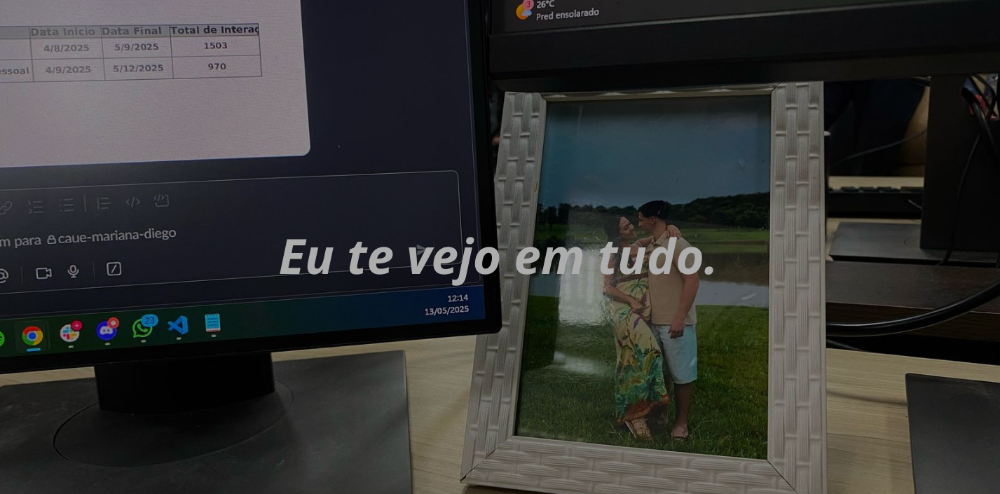
Detalhe: Esse site será eterno, então você pode acessá-lo todo dia para ver as atualizações que estarão te esperando.❤️🩹